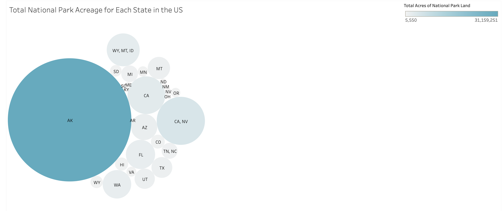
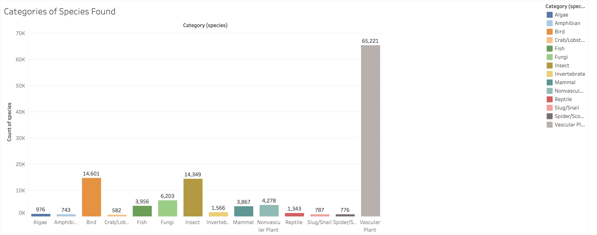
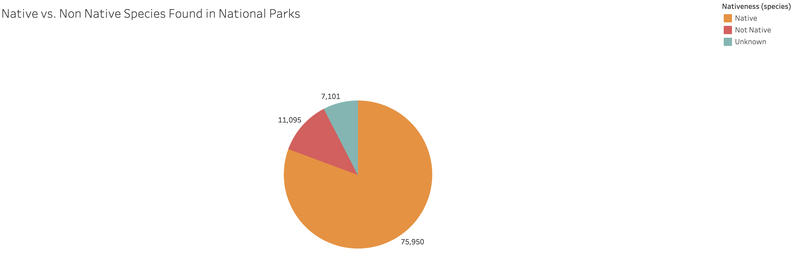
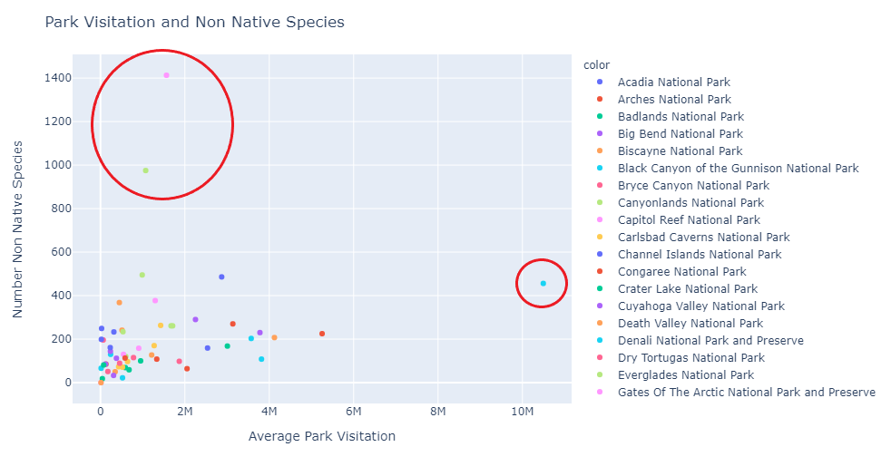
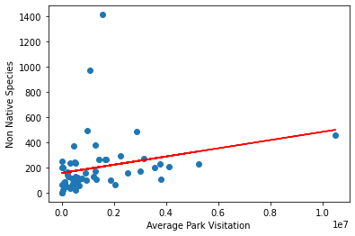
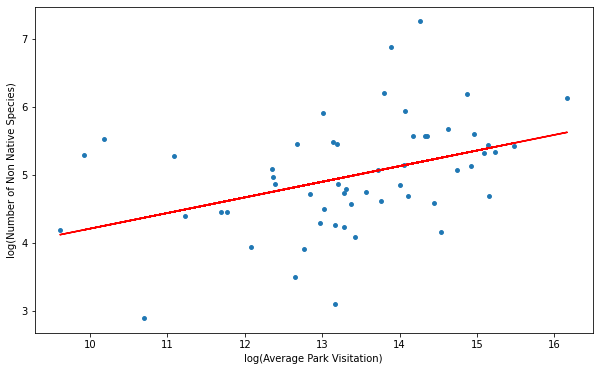

Interactive map showing acerage of each National Park

This bubble chart displays the total acreage of national park land each state has. Alaska by far has the largest amount of national park land with over 31 million acres of land reserved for national parks.

Vascular plants were the most recorded species throughout national parks. Crabs/Lobsters were the least recorded species throughout national parks, which makes sense given they are usually found in the ocean. National Parks span the entire US far beyond the coasts!

There were significantly more native species found within national parks than Not Native species. However, almost as many recorded species were unknown, meaning they could not be identified as native or not native.
National Park visitation has been booming over the past 10 years. Almost every park, outside of a handful, had a growth in visitation. Some parks saw an increase of visitors by the thousands, others by the millions.

A scattered positive correlation with some potential outliers (circled in red)

An initial linear regression model presented a positive correlation with an R-squared value scored of 0.06 and an RMSE of 217.45.

A logarithmic transformation done on both X and y variables